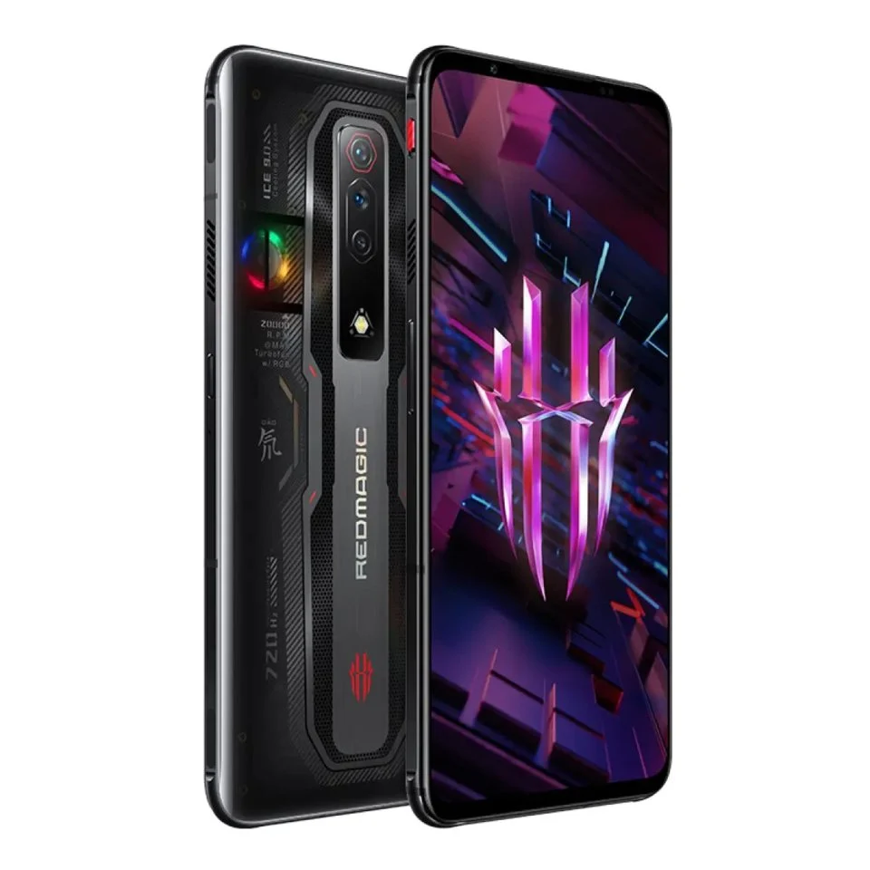
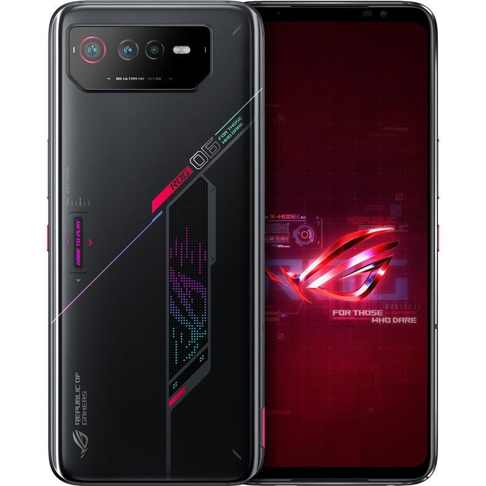
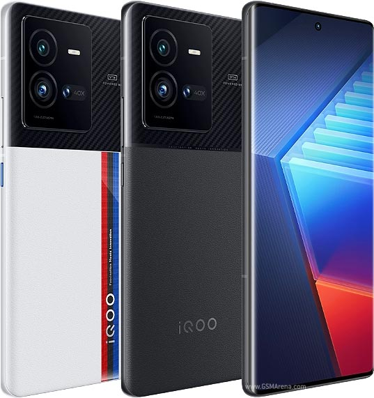
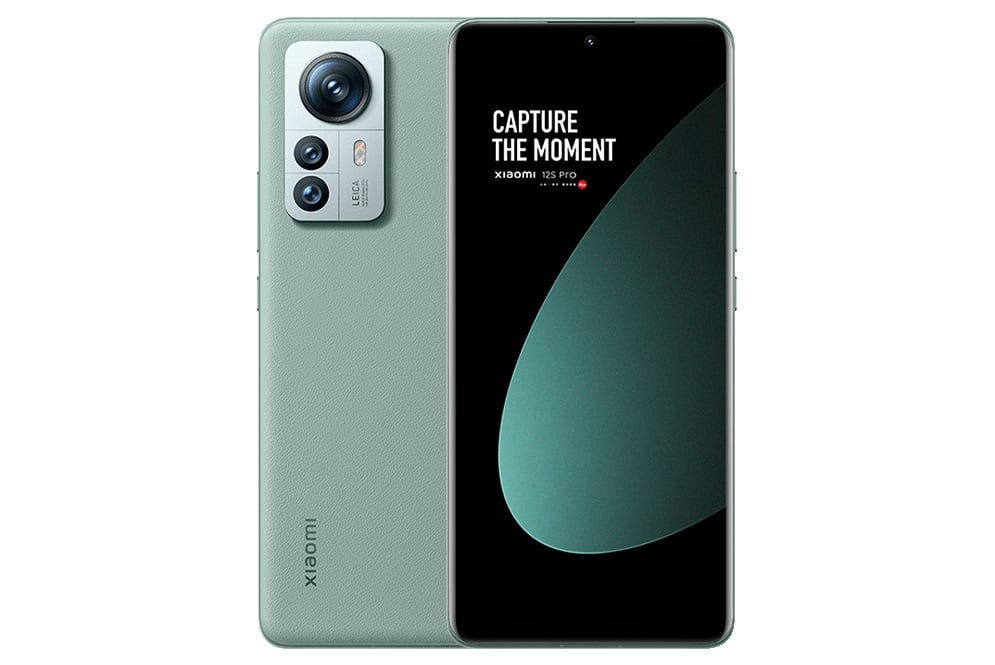

Um telemóvel combina vários recursos de computadores pessoais com funcionalidades avançadas que podem ser estendidos por meios de programas aplicativos executados pelo seu sistema operacional, permitindo que desenvolvedores façam milhares de programas adicionais, com diversas utilidades, agregados em lojas online como o Google Play para Android e a Apple App Store para iOS. Na apresentação em baixo são apresentados os melhores telemóveis que apresentam nas lojas, não estando por ordem.
| # | Name | Year | Fabricante | Processador | RAM | Memória | Bateria |
|---|---|---|---|---|---|---|---|
| 1 | Nubia Red Magic 7S | 2022 | Nubia | Snapdragon 8 Plus Gen 1 | 16GB | 512GB | 4500 mAh |
| 2 | Asus ROG Phone 6 | 2022 | Asus | Snapdragon 8 Plus Gen 1 | 18GB | 512GB | 6000mAh |
| 3 | iQOO 10 Pro | 2022 | Vivo | Snapdragon 8 Plus Gen 1 | 12GB | 512GB | 4700mAh |
| 4 | Xiaomi 12S Pro | 2022 | Xiaomi | Snapdragon 8 Plus Gen 1 | 12GB | 512GB | 4600mAh |
| 5 | Realme GT 2 Master Explorer | 2022 | Realme | Snapdragon 8 Plus Gen 1 | 12GB | 512GB | 5000mAh |
O telemóvel da Zet foi lançado em março de 2022 com 512 GB de armazenamento, para além de ter 16GB RAM, tendo o processador mais recente e potente o Snapdragon 8 Plus Gen1. Tem um ecrã de 6.8 polegadascom uma taxa de atualização de 165Hz para as pessoas que se interessam pela qualidade de transição de imagens. Inclui uma bateria de 4.500mAh, suportando um carregamento rápido de 120W e câmera tripla com lentes até 64 MP.
O ROG Phone 6 foi lançado em julho de 2022, feito pela Asus, tendo 512GB de armazenamento e 16GB RAM.Tem também a opção com 18GB de RAM. Na sua estrutura, o ROG Phone 6 mostra luzes RGB na parte de trás com 6,7 polegadas com uma taxa de atualização de 165Hz e uma bateria que traz 6.000mAh.
O iQOO 10 Pro feito pela Vivo, uma fábrica chinesa, foi lançado em julho de 2022, tendo 512GB de armazenamento e 12GB de RAM. Possuí uma bateria com 4.700 mAh com um carregamento rápido de 200W. Ecrã de 6.7 polegadas com taxa de 120Hz suportando rede 5G e traz câmeras com lentes de 50MP.
Feito pela Xiaomi lançado em 4 de julho de 2022,com uma memória até 512 GB de armazenamento e 12GB RAM. Tem uma bateria de 4600 mAh com um carregamento rápido de 120W. Ecrã de 6.7 polegadas com uma taxa de 120Hz tendo suporte de rede 5G.
Feito pela Realme lançado em julho de 2022,com uma memória até 512 GB de armazenamento e 12GB RAM. Tem uma bateria de 5000 mAh com um carregamento rápido de 120W. Ecrã de 6.7 polegadas com uma taxa de 120Hz tendo suporte de rede 5G.